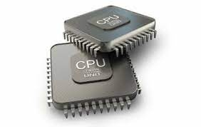
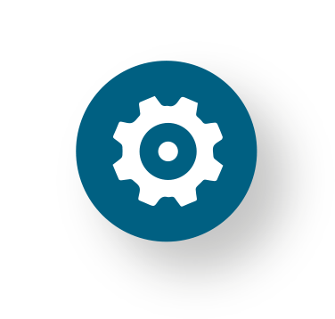

AntiX

descripción
¿Que es AntiX?
AntiX es una distribución de GNU/Linux basada en Debian Stable. Es comparativamente liviano y adecuado para computadoras más viejas, mientras que también proporciona kernel y aplicaciones de vanguardia, así como actualizaciones y adiciones a través del sistema de paquetes apt-get y repositorios compatibles con Debian

requisitos
Que necesita para funcionar
| requisitos | RAM | Disco duro | instalación |
|---|---|---|---|
| Mínimo | 128 Megabytes | 1 Gigabytes | 2.7 GB de espacio en disco duro |
| Ideal | 256 Megabytes | 1 Gigabyte | 2.7 GB de espacio en disco duro |

características
Características de Debian
Para consultar las principales características de antix pulse Aquí
Son demasiadas para escribirlas aquí y esta persona las tiene bien organizadas.
Son demasiadas para escribirlas aquí y esta persona las tiene bien organizadas.
web oficial
Sitio web oficial de la distribución para saber más
Pulse aqui para ir al sitio web oficial de la distribución